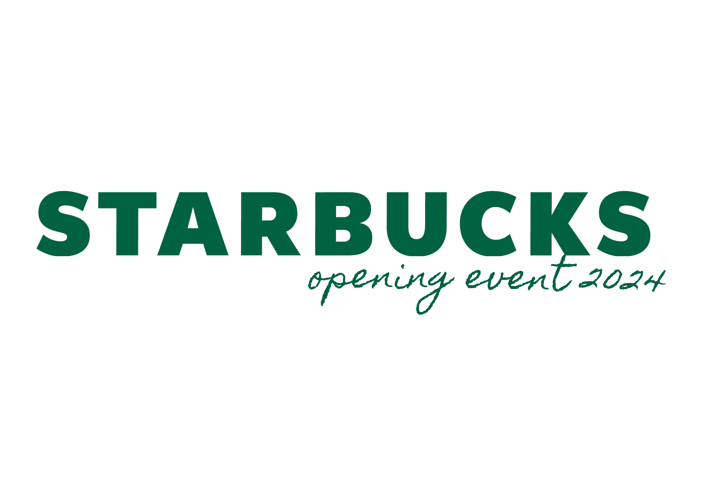
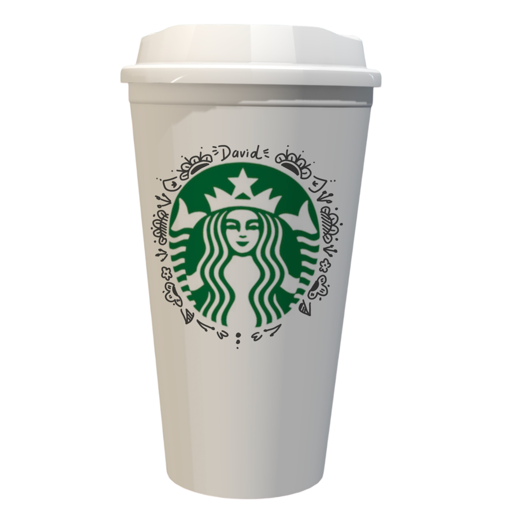
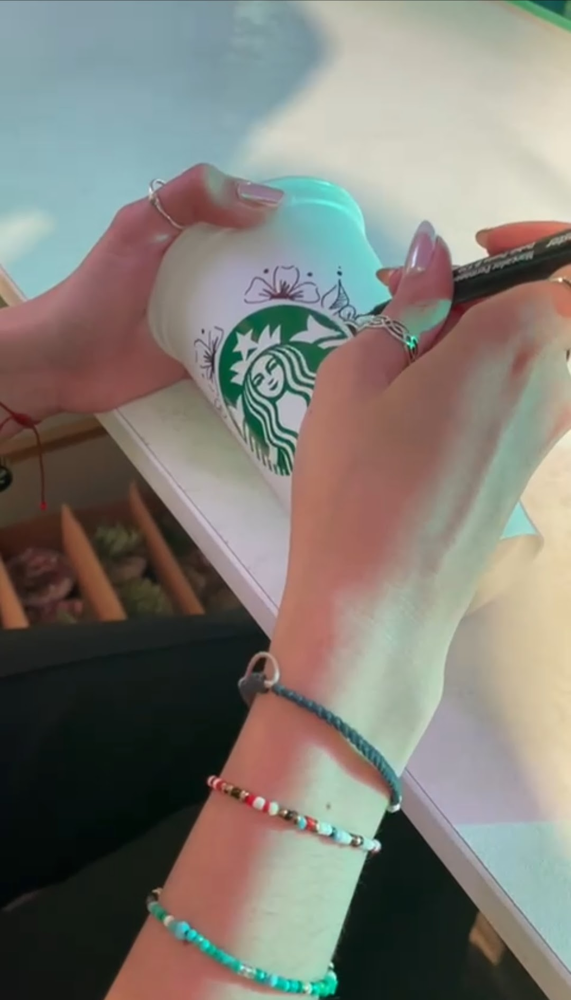
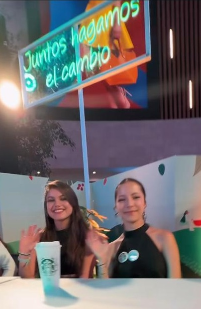
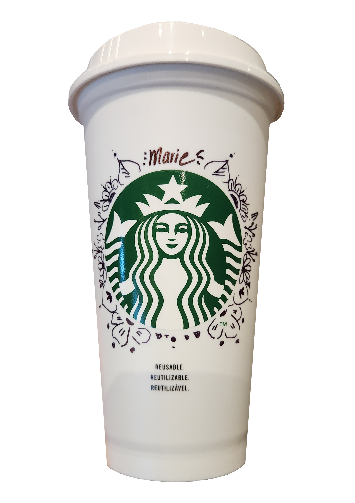

Tuve el privilegio de ser una de las artistas seleccionadas para participar en la preinauguración de Starbucks, un evento exclusivo donde influencers y personas invitadas tuvieron la opción de personalizar mercancías con mandalas. Mi trabajo consistió en crear diseños únicos que reflejaran la esencia de la marca y, al mismo tiempo, permitieran a cada asistente expresar su individualidad.




